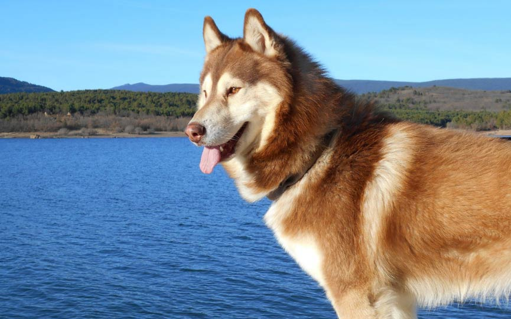
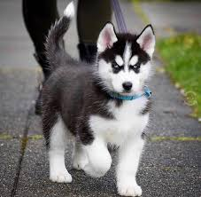
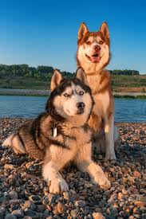

¡Adóptame!




Romeo y July
Published date: abril 24, 2026
Edad: 4 y 3 años
Tamaño: Grandes
Raza: Lobo Siberiano
Color: Negro con blanco y castaño
Es encantadora, juguetona y se la lleva muy bien con todos. Es un amor. Ya está esterilizada.